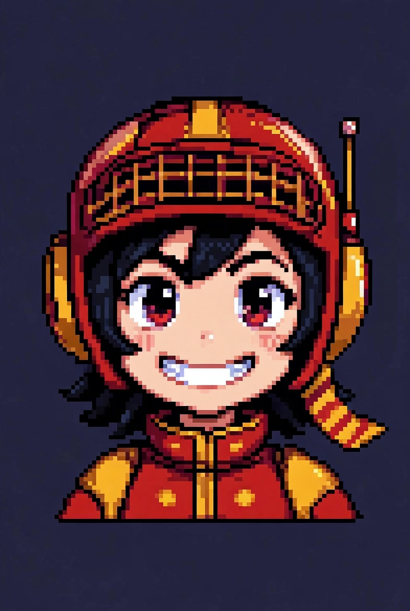

```html
<!DOCTYPE html>
<html lang="ja">
<head>
<meta charset="UTF-8" />
<meta name="viewport" content="width=device-width, initial-scale=1.0, maximum-scale=1.0" />
<title>宇宙探査マインスイーパー</title>

<style>
:root{--cell-size:36px;}
html,body{height:100%; overflow:hidden;}
body{
  margin:0;
  font-family:sans-serif;
  background:url("space.jpg") center/cover no-repeat fixed;
  color:#fff;

  user-select:none;
  -webkit-user-select:none;
  -webkit-touch-callout:none;
  touch-action:manipulation;
}

/* ======================
   レイアウト
====================== */
#container{ display:flex; height:100vh; }

@media(min-width:768px){
  #container{ justify-content:center; align-items:center; gap:32px; }
  :root{--cell-size:48px;}
}

/* ====== スマホだけ調整（PCは触らない） ====== */
@media(max-width:767px){
  :root{--cell-size:min(8.2vw,34px);}

  html,body{ overflow:hidden; }

  #container{
    flex-direction:column;
    align-items:center;
    padding-top:56px;
    gap:8px;
    box-sizing:border-box;
    height:100vh;
  }

  #side{ order:1; width:92vw; padding:8px; }

  /*
    ★画像を「スクロールしないギリギリ」まで大きく
    - height を上げる（端末差を吸収するため max-height も上げる）
  */
  #explorer{
    width:auto;
    max-width:86vw;
    height:24vh;        /* 18vh -> 24vh（大きく） */
    max-height:220px;   /* 160px -> 220px（大きく） */
    object-fit:contain;
    display:block;
    margin:0 auto;
  }

  #status{ margin-top:6px; font-size:16px; }

  /* 盤面がはみ出さないように計算を更新 */
  #game{
    order:2;
    width:92vw;
    padding:6px;
    max-height:calc(100vh - 56px - 24vh - 100px);
    overflow:hidden;
  }
}

/* ======================
   上部ボタン（スマホ）
====================== */
#topButtons{display:none;}
@media(max-width:767px){
  #topButtons{
    position:fixed; top:0; left:0;
    width:100%; height:48px;
    background:rgba(5,5,20,.9);
    display:flex;
    justify-content:center;
    align-items:center;
    gap:12px;
    z-index:999;
    border-bottom:1px solid #111144;
  }
}

/* ======================
   ゲーム盤
====================== */
#game{
  background:rgba(0,0,20,.6);
  border-radius:6px;
  position:relative;
  transition:box-shadow .2s, outline .2s, transform .2s;
}

/* 1段階目（残り10以下）：薄い点滅 */
#game.stage1{ animation:boardStage1 .9s infinite; }
@keyframes boardStage1{
  0%,100%{filter:brightness(.55);}
  50%{filter:brightness(.95);}
}

/* 2段階目（残り3以下）：黄色枠チカチカ */
#game.stage2{
  outline:3px solid rgba(255,215,0,.95);
  box-shadow:0 0 22px rgba(255,215,0,.65);
  animation:stage2Blink .28s infinite;
}
@keyframes stage2Blink{
  0%,100%{filter:brightness(.85) contrast(1.1);}
  50%{filter:brightness(1.35) contrast(1.35);}
}

/* 3段階目（残り1）：赤枠で揺れる */
#game.stage3{
  outline:4px solid rgba(255,60,60,.98);
  box-shadow:0 0 34px rgba(255,60,60,.75);
  animation:stage3Shake .16s infinite;
}
@keyframes stage3Shake{
  0%{transform:translate(0,0) rotate(0deg) scale(1.01); filter:brightness(1.05) contrast(1.25);}
  25%{transform:translate(1px,-1px) rotate(-0.4deg) scale(1.02); filter:brightness(1.2) contrast(1.45);}
  50%{transform:translate(-1px,1px) rotate(0.4deg) scale(1.02); filter:brightness(1.35) contrast(1.6);}
  75%{transform:translate(1px,1px) rotate(-0.3deg) scale(1.02); filter:brightness(1.2) contrast(1.45);}
  100%{transform:translate(-1px,-1px) rotate(0.3deg) scale(1.01); filter:brightness(1.05) contrast(1.25);}
}

/* ラスト1マス煽りテロップ */
#hype{
  position:fixed; inset:0;
  display:none;
  align-items:center; justify-content:center;
  pointer-events:none;
  z-index:2000;
}
#hype.show{display:flex;}
#hype .box{
  padding:14px 18px;
  background:rgba(0,0,0,.55);
  border:1px solid rgba(255,215,0,.65);
  border-radius:10px;
  color:gold;
  font-weight:900;
  letter-spacing:.08em;
  text-shadow:0 0 10px rgba(255,215,0,.75);
  animation:hypeInOut .9s ease-in-out;
}
@keyframes hypeInOut{
  0%{opacity:0; transform:translateY(10px) scale(.96);}
  25%{opacity:1; transform:translateY(0) scale(1);}
  100%{opacity:0; transform:translateY(-6px) scale(1.02);}
}

table{border-collapse:collapse; margin:auto;}
td{
  width:var(--cell-size);
  height:var(--cell-size);
  border:1px solid #111144;
  background:#1a1a3d;
  text-align:center;
  font-weight:bold;
  cursor:pointer;
  font-size:calc(var(--cell-size)*0.5);

  user-select:none;
  -webkit-user-select:none;
  -webkit-touch-callout:none;

  touch-action:manipulation;
}
td.open{background:#33334d;cursor:default;}
td.flag{background:#111144;color:#0f0;}
td.enemy{background:black url("asteroid.jpeg") center/cover no-repeat;}
td.alien{background:url("alien.jpeg") center/cover no-repeat;}

.num1{color:#66ccff;}
.num2{color:#33ff77;}
.num3{color:#ff6666;}
.num4{color:#cc66ff;}
.num5{color:#ffcc66;}
.num6{color:#00cccc;}
.num7{color:#aaaaaa;}
.num8{color:#ffffff;}

/* ======================
   サイドUI
====================== */
#side{
  background:rgba(5,5,20,.7);
  padding:12px;
  text-align:center;
  border-radius:8px;
}
#explorer{width:min(300px,90vw);}
#explorer.captured{filter:grayscale(40%) brightness(.8);}
#explorer.perfect{
  border:6px solid gold;
  border-radius:14px;
  box-shadow:0 0 30px gold;
}

#status{
  margin-top:8px;
  font-size:18px;
  font-weight:bold;
}
#status.clear{
  color:gold;
  text-shadow:0 0 8px gold;
}

/* ======================
   ボタン
====================== */
button{
  padding:8px 14px;
  font-size:14px;
  background:#1a1a3d;
  border:none;
  color:white;
  cursor:pointer;
}
#buttons{
  margin-top:8px;
  display:flex;
  gap:8px;
  justify-content:center;
}
@media(max-width:767px){
  #buttons{display:none;}
}
</style>
</head>

<body>
<div id="topButtons">
  <button id="restartTop">RESTART</button>
  <button id="bgmToggleTop">BGM OFF</button>
</div>

<div id="hype"><div class="box" id="hypeText"></div></div>

<div id="container">
  <div id="game"></div>

  <div id="side">
    
    <div id="status">探索開始！</div>

    <div id="buttons">
      <button id="restart">RESTART</button>
      <button id="bgmToggle">BGM OFF</button>
    </div>
  </div>
</div>

<!-- AUDIO -->
<audio id="seOpen" src="open.mp3"></audio>
<audio id="seFlag" src="flag.mp3"></audio>
<audio id="seDeath" src="death.mp3"></audio>
<audio id="sePerfect" src="perfect.mp3"></audio>
<audio id="alienSound" src="alienSound.mp3"></audio>
<audio id="clear1" src="clear1.mp3"></audio>
<audio id="clear2" src="clear2.mp3"></audio>
<audio id="bgm" src="bgm.mp3" loop></audio>
<audio id="lastBgm" src="last.mp3" loop></audio>

<script>
const ROWS=9, COLS=9, ENEMIES=10;

const IMG_NORMAL   = "explorer.jpeg";
const IMG_HYPE1    = "hype1.jpeg";
const IMG_HYPE2    = "hype2.jpeg";
const IMG_HYPE3    = "hype3.jpeg";
const IMG_CLEAR    = "clear.jpeg";
const IMG_PERFECT  = "perfect.jpeg";
const IMG_DEATH    = "explorer.jpeg";

const EXTRA_RING_OPEN = 3;

/*
  要望：
  - PCは触らない → CSS/挙動は max-width:767px の中だけ変更、JSは共通だがPCの見た目は不変
  - スマホでRESTARTのたびにBGMが止まる → init()でBGMを止めない（ユーザーのON/OFF状態を維持）
    さらに「残り10以下でlastBgmに切り替える」時も、鳴っていたら切替、鳴ってなければ鳴らさない。
*/

let board=[], opened=[], flags=[];
let gameOver=false;
let usedFlag=false;
let started=false;

let lastMode=false;
let stageShown=0;

let alienPos=null;
let alienFound=false;

const game=document.getElementById("game");
const explorer=document.getElementById("explorer");
const statusEl=document.getElementById("status");
const hype=document.getElementById("hype");
const hypeText=document.getElementById("hypeText");

const bgm=document.getElementById("bgm");
const lastBgm=document.getElementById("lastBgm");

const bgmToggle=document.getElementById("bgmToggle");
const bgmToggleTop=document.getElementById("bgmToggleTop");

const seOpen=document.getElementById("seOpen");
const seFlag=document.getElementById("seFlag");
const seDeath=document.getElementById("seDeath");
const sePerfect=document.getElementById("sePerfect");
const alienSound=document.getElementById("alienSound");
const clear1=document.getElementById("clear1");
const clear2=document.getElementById("clear2");

/* ===== サウンド ===== */
function play(se){
  if(!se) return;
  try{ se.currentTime=0; se.play().catch(()=>{}); }catch(e){}
}
function stopAllBgm(){ bgm.pause(); lastBgm.pause(); }
function isAnyBgmPlaying(){ return (!bgm.paused) || (!lastBgm.paused); }
function setBgmButtonText(on){
  const t = on ? "BGM OFF" : "BGM ON";
  bgmToggle.textContent=t;
  bgmToggleTop.textContent=t;
}
function getCurrentBgm(){ return lastMode ? lastBgm : bgm; }
function startBgmIfPossible(){
  const target=getCurrentBgm();
  target.play().then(()=>setBgmButtonText(true)).catch(()=>setBgmButtonText(false));
}
function toggleBGM(){
  if(isAnyBgmPlaying()){
    stopAllBgm();
    setBgmButtonText(false);
  }else{
    startBgmIfPossible();
  }
}
bgmToggle.onclick=toggleBGM;
bgmToggleTop.onclick=toggleBGM;

/* スマホ自動再生制限対策：最初の1回だけ押下でBGM開始（OFFにしたい人はボタンで止める） */
document.addEventListener("pointerdown", ()=>{
  if(!isAnyBgmPlaying()) startBgmIfPossible();
},{once:true});

/* 残り10以下でlastBgmへ切替：鳴っている時だけ切替（止まってるなら鳴らさない） */
function switchBgmMode(toLast){
  if(lastMode === toLast) return;
  const wasPlaying = isAnyBgmPlaying();
  stopAllBgm();
  lastMode = toLast;
  if(wasPlaying){
    startBgmIfPossible();
  }else{
    // OFF状態は維持
    setBgmButtonText(false);
  }
}

/* 右クリック/長押しメニュー抑止 */
document.addEventListener("contextmenu", (e)=>e.preventDefault());

document.getElementById("restart").onclick=init;
document.getElementById("restartTop").onclick=init;

/* ===== util ===== */
function inBounds(r,c){ return r>=0 && r<ROWS && c>=0 && c<COLS; }
function neighbors(r,c){
  const res=[];
  for(let dr=-1; dr<=1; dr++){
    for(let dc=-1; dc<=1; dc++){
      if(dr===0 && dc===0) continue;
      const nr=r+dr, nc=c+dc;
      if(inBounds(nr,nc)) res.push([nr,nc]);
    }
  }
  return res;
}
function countAdjEnemies(r,c){
  return neighbors(r,c).reduce((acc,[nr,nc])=>acc + (board[nr][nc]===-1 ? 1 : 0),0);
}
function computeNumbers(){
  for(let r=0;r<ROWS;r++){
    for(let c=0;c<COLS;c++){
      if(board[r][c]===-1) continue;
      board[r][c]=countAdjEnemies(r,c);
    }
  }
}
function remainingSafeCells(){
  let cnt=0;
  for(let r=0;r<ROWS;r++){
    for(let c=0;c<COLS;c++){
      if(board[r][c]!==-1 && !opened[r][c]) cnt++;
    }
  }
  return cnt;
}
function key(r,c){ return r+","+c; }
function isAlienCell(r,c){
  return alienPos && alienPos[0]===r && alienPos[1]===c;
}

/* ===== board ===== */
function placeEnemiesWithSafeZone(excludeR, excludeC){
  board = Array.from({length:ROWS},()=>Array(COLS).fill(0));

  const safe=new Set();
  safe.add(key(excludeR,excludeC));
  for(const [nr,nc] of neighbors(excludeR, excludeC)) safe.add(key(nr,nc));

  let placed=0;
  while(placed<ENEMIES){
    const r=Math.floor(Math.random()*ROWS);
    const c=Math.floor(Math.random()*COLS);
    if(safe.has(key(r,c))) continue;
    if(board[r][c]===-1) continue;
    board[r][c]=-1;
    placed++;
  }

  // 宇宙人（安全マス）を1体配置：地雷ではない＆安全地帯にも置かない
  alienPos=null;
  alienFound=false;
  while(true){
    const r=Math.floor(Math.random()*ROWS);
    const c=Math.floor(Math.random()*COLS);
    if(safe.has(key(r,c))) continue;
    if(board[r][c]===-1) continue;
    alienPos=[r,c];
    break;
  }

  computeNumbers();
}

/* ===== render ===== */
function cellEl(r,c){
  return document.querySelector(`td[data-r="${r}"][data-c="${c}"]`);
}

function render(){
  const table=document.createElement("table");
  for(let r=0;r<ROWS;r++){
    const tr=document.createElement("tr");
    for(let c=0;c<COLS;c++){
      const td=document.createElement("td");
      td.dataset.r=r; td.dataset.c=c;

      td.addEventListener("click", (e)=>{
        e.preventDefault();
        if(gameOver) return;
        openCell(r,c);
      });

      td.addEventListener("contextmenu", (e)=>{
        e.preventDefault();
        if(gameOver) return;
        toggleFlag(r,c);
      });

      // スマホ長押し旗
      let pressTimer=null;
      td.addEventListener("pointerdown", (e)=>{
        if(e.pointerType === "mouse") return;
        if(gameOver) return;
        pressTimer=setTimeout(()=>{
          toggleFlag(r,c);
          pressTimer=null;
        }, 380);
      });
      td.addEventListener("pointerup", ()=>{ if(pressTimer){ clearTimeout(pressTimer); pressTimer=null; } });
      td.addEventListener("pointerleave", ()=>{ if(pressTimer){ clearTimeout(pressTimer); pressTimer=null; } });
      td.addEventListener("pointercancel", ()=>{ if(pressTimer){ clearTimeout(pressTimer); pressTimer=null; } });

      tr.appendChild(td);
    }
    table.appendChild(tr);
  }
  game.innerHTML="";
  game.appendChild(table);
}

function updateCellView(r,c){
  const td=cellEl(r,c);
  if(!td) return;

  td.className="";
  td.textContent="";

  if(flags[r][c] && !opened[r][c]){
    td.classList.add("flag");
    td.textContent="🚩";
    return;
  }

  if(!opened[r][c]){
    return;
  }

  if(isAlienCell(r,c)){
    td.classList.add("open","alien");
    td.textContent="";
    return;
  }

  td.classList.add("open");
  const v=board[r][c];

  if(v===-1){
    td.classList.add("enemy");
    td.textContent="";
    return;
  }
  if(v===0){
    td.textContent="";
    return;
  }
  td.textContent=String(v);
  td.classList.add("num"+v);
}
function refreshAll(){
  for(let r=0;r<ROWS;r++) for(let c=0;c<COLS;c++) updateCellView(r,c);
}

/* ===== game logic ===== */
function floodOpen(sr,sc){
  const q=[[sr,sc]];
  const seen=new Set([key(sr,sc)]);

  while(q.length){
    const [r,c]=q.shift();
    opened[r][c]=true;
    flags[r][c]=false;
    updateCellView(r,c);

    if(isAlienCell(r,c)) continue;

    if(board[r][c]!==0) continue;

    for(const [nr,nc] of neighbors(r,c)){
      const k=key(nr,nc);
      if(seen.has(k)) continue;
      if(opened[nr][nc]) continue;
      if(flags[nr][nc]) continue;

      // 宇宙人マスは連鎖で開かない（クリック必須）
      if(isAlienCell(nr,nc)) continue;

      seen.add(k);
      q.push([nr,nc]);
    }
  }
}

function openExtraRing(r,c,dist){
  for(let dr=-dist; dr<=dist; dr++){
    for(let dc=-dist; dc<=dist; dc++){
      const nr=r+dr, nc=c+dc;
      if(!inBounds(nr,nc)) continue;
      if(opened[nr][nc]) continue;
      opened[nr][nc]=true;
      updateCellView(nr,nc);
    }
  }
}

function openCell(r,c){
  if(gameOver) return;
  if(flags[r][c]) return;

  if(!started){
    started=true;
    placeEnemiesWithSafeZone(r,c);
  }

  if(opened[r][c]) return;

  play(seOpen);

  // 宇宙人：そのマスを直接クリックした時だけ出る
  if(isAlienCell(r,c)){
    opened[r][c]=true;
    alienFound=true;
    updateCellView(r,c);
    play(alienSound);
    statusEl.textContent="宇宙人だ！！！";
    checkStagesAndClear();
    return;
  }

  if(board[r][c]===-1){
    gameOver=true;
    explorer.src = IMG_DEATH;
    explorer.classList.add("captured");
    statusEl.textContent="撃沈…！";
    play(seDeath);

    for(let rr=0; rr<ROWS; rr++){
      for(let cc=0; cc<COLS; cc++){
        if(board[rr][cc]===-1) opened[rr][cc]=true;
      }
    }
    openExtraRing(r,c,EXTRA_RING_OPEN);
    refreshAll();
    return;
  }

  floodOpen(r,c);
  checkStagesAndClear();
}

function toggleFlag(r,c){
  if(gameOver) return;
  if(opened[r][c]) return;

  flags[r][c]=!flags[r][c];
  usedFlag = usedFlag || flags[r][c];

  play(seFlag);
  updateCellView(r,c);
  checkStagesAndClear();
}

function showHypeOnce(text){
  hypeText.textContent=text;
  hype.classList.add("show");
  setTimeout(()=>hype.classList.remove("show"), 900);
}

function setStage(stage){
  game.classList.remove("stage1","stage2","stage3");
  if(stage===1) game.classList.add("stage1");
  if(stage===2) game.classList.add("stage2");
  if(stage===3) game.classList.add("stage3");
}

function checkStagesAndClear(){
  const rem = remainingSafeCells();

  if(rem<=10 && stageShown<1){
    stageShown=1;
    setStage(1);
    explorer.src = IMG_HYPE1;
    statusEl.textContent="早く宇宙船に戻らないと...!";
    switchBgmMode(true);
  }

  if(rem<=3 && stageShown<2){
    stageShown=2;
    setStage(2);
    explorer.src = IMG_HYPE2;
    statusEl.textContent="もう少しだ…！";
  }

  if(rem<=1 && stageShown<3){
    stageShown=3;
    setStage(3);
    explorer.src = IMG_HYPE3;
    statusEl.textContent="早く脱出しないとおぉっっっ！！！";
    showHypeOnce("早く脱出しないとおぉっっっ！！！");
  }

  if(rem===0 && !gameOver){
    gameOver=true;
    setStage(0);

    // クリア時はBGM止める仕様は好みが分かれるので「止めない」に変更したいならここをコメントアウト
    // stopAllBgm(); setBgmButtonText(false);

    statusEl.classList.add("clear");
    explorer.classList.remove("captured");
    explorer.classList.remove("perfect");

    if(!usedFlag){
      statusEl.textContent="PERFECT！！";
      explorer.src = IMG_PERFECT;
      explorer.classList.add("perfect");
      play(sePerfect);
    }else{
      statusEl.textContent="CLEAR！！";
      explorer.src = IMG_CLEAR;
      play(clear1);
      setTimeout(()=>play(clear2), 220);
    }
  }
}

function init(){
  // ★BGMは止めない（RESTARTしても流れ続ける）
  // stopAllBgm(); setBgmButtonText(false); ← これをやらない

  // lastModeはゲーム演出用なので初期化するが、
  // いま鳴っているBGMがあれば「通常BGM」に戻すかどうかは好み：
  // 今回は「新規ゲーム開始時は通常BGMに戻す。ただし鳴ってるなら切替、鳴ってないならそのまま」を採用。
  const wasPlaying = isAnyBgmPlaying();
  if(lastMode){
    stopAllBgm();
  }
  lastMode=false;
  if(wasPlaying){
    startBgmIfPossible(); // 通常BGMへ
  }else{
    setBgmButtonText(false);
  }

  gameOver=false;
  usedFlag=false;
  started=false;
  stageShown=0;

  alienPos=null;
  alienFound=false;

  explorer.src = IMG_NORMAL;
  explorer.classList.remove("captured","perfect");
  statusEl.classList.remove("clear");
  statusEl.textContent="探索開始！";

  board = Array.from({length:ROWS},()=>Array(COLS).fill(0));
  opened = Array.from({length:ROWS},()=>Array(COLS).fill(false));
  flags  = Array.from({length:ROWS},()=>Array(COLS).fill(false));

  game.classList.remove("stage1","stage2","stage3");

  render();
  refreshAll();
}

init();
</script>
</body>
</html>
```